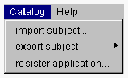

| |
スクールブラウザウィンドウの Catalog メニューには、import subject、export
subject、resister application というカタログサーバ操作に関するメニュー項目があります。export
subject には、intereface part、implementation part のサブメニュー項目が存在します。

| import subject... | カタログサーバからサブジェクトをインポートします。 | ||
| export subject.... | カタログサーバにサブジェクトをエキスポートします。 | ||
| resister application... | IDEで構築したアプリケーションをカタログサーバに登録します。 |
| |